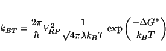
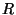
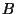
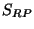
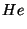
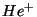
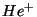

The NWChem electron transfer (ET) module calculates the electronic coupling energy (also called the electron transfer
matrix element) between ET reactant and product states. The electronic coupling (), activation energy (),
and nuclear reorganization energy ( ) are all components of the electron transfer rate defined by Marcus' theory, which
also depends on the temperature (reference 1):
) are all components of the electron transfer rate defined by Marcus' theory, which
also depends on the temperature (reference 1):
|  | (27.1) |
The ET module utilizes the method of Corresponding Orbital Transformation to calculate . The only input required are the names of the files containing the open-shell (UHF or ODFT) MO vectors for the ET reactant and product states ( and ).
Although open-shell DFT orbitals can be used as input, the current implementation of the ET module uses a Hartree-Fock formalism (ref.3). Therefore, for consistency, UHF orbitals should be used for the calculation of , although this is not required.
The basis set used in the calculation of must be the same as the basis set used to calculate the MO vectors of and . The magnitude of depends on the amount of overlap between and , which is important to consider when choosing the basis set. Diffuse functions may be necessary to fill in the overlap, particularly when the ET distance is long.
The MO's of and must correspond to localized states. for instance, in the reaction  

 the transferring electron is localized on A in the reactant state and is localized on B in the product state.
To verify the localization of the electron in the calculation of the vectors, carefully examine the Mulliken population
analysis. In order to determine which orbitals are involved in the electron transfer, use the print keyword
the transferring electron is localized on A in the reactant state and is localized on B in the product state.
To verify the localization of the electron in the calculation of the vectors, carefully examine the Mulliken population
analysis. In order to determine which orbitals are involved in the electron transfer, use the print keyword "mulliken ao"
which prints the Mulliken population of each basis function.
An effective core potential (ECP) basis can be used to replace core electrons. However, there is one caveat: the orbitals involved in electron transfer must not be replaced with ECP's. Since the ET orbitals are valence orbitals, this is not usually a problem, but the user should use ECP's with care.
Suggested references are listed below. The first two references gives a good description of Marcus' two-state ET model, and the appendix of the third reference details the method used in the ET module.
VECTORS [reactants] <string reactants_filename> VECTORS [products ] <string products_filename>
In the VECTORS directive the user specifies the source
of the molecular orbital vectors for the ET reactant and product states.
This is required input, as no default filename will be set by the program.
In fact, this is the only required input in the ET module, although there are
other optional keywords described below.
<string (FOCK||NOFOCK) default FOCK>
This directive enables/disables the use of the NWChem's Fock matrix routine in the calculation of the two-electron portion of the ET Hamiltonian. Since the Fock matrix routine has been optimized for speed, accuracy and parallel performance, it is the most efficient choice.
Alternatively, the user can calculate the two-electron contribution to the ET Hamiltonian with another subroutine which may be more accurate for systems with a small number of basis functions, although it is slower.
TOL2E <real tol2e default max(10e-12,min(10e-7, S(RP)*10e-7 )>
The variable tol2e is used in determining the integral
screening threshold for the evaluation of the two-electron contribution to the Hamiltonian
between the electron transfer reactant and product states.
As a default, tol2e is set depending on the magnitude
of the overlap between the ET reactant and product states (), and is not less than 1.0d-12
or greater than 1.0d-7.
The input to specify the threshold explicitly within the ET
directive is, for example:
tol2e 1e-9
The following example is for a simple electron transfer reaction,   .
The ET calculation is easy to execute, but it is crucial that ET reactant and product
wavefunctions reflect localized states. This can be accomplished
using either a fragment guess (shown in the example, see 10.5.1), or a charged atomic
density guess (see 10.5.2).
For self-exchange ET reactions such as this one, you can use the
.
The ET calculation is easy to execute, but it is crucial that ET reactant and product
wavefunctions reflect localized states. This can be accomplished
using either a fragment guess (shown in the example, see 10.5.1), or a charged atomic
density guess (see 10.5.2).
For self-exchange ET reactions such as this one, you can use the
REORDER keyword to move the electron from the first helium to the second (see 10.5).
Example input :
#ET reactants: charge 1 scf doublet; uhf; vectors input fragment HeP.mo He.mo output HeA.mo # HeP.mo are the vectors for He(+), # He.mo are the vectors for neutral He. end task scf #ET products: charge 1 scf doublet; uhf; vectors input HeA.mo reorder 2 1 output HeB.mo end task scf et vectors reactants HeA.mo vectors products HeB.mo end task scf et
Here is what the output looks like for this example:
Electron Transfer Calculation
-----------------------------
MO vectors for reactants: HeA.mo
MO vectors for products : HeB.mo
Electronic energy of reactants H(RR) -5.3402392824
Electronic energy of products H(PP) -5.3402392824
Reactants/Products overlap S(RP) -0.0006033839
Reactants/Products interaction energy:
-------------------------------------
One-electron contribution H1(RP) 0.0040314092
Beginning calculation of 2e contribution
Two-electron integral screening (tol2e) : 6.03E-11
Two-electron contribution H2(RP) -0.0007837138
Total interaction energy H(RP) 0.0032476955
Electron Transfer Coupling Energy |V(RP)| 0.0000254810
5.592 cm-1
0.000693 eV
0.016 kcal/mol
The overlap between the ET reactant and product states () is small,
so the magnitude of the coupling between the states is also small.
If the fragment guess
or charged atomic density guess were not used, the Mulliken spin population would be 0.5 on both He atoms, the overlap between
the ET reactant and product states would be 100 % and an infinite
would result.